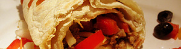

Fajitas
5 von 6mehl, hefe, salz, olivenoel und wasser zu einem teig zusammenkneten. zu einem dünnen pfannengrossen fladen auswalen und auf umgekehrtem wok oder steinplatte backen. in vorgeheiztem ofen in feuchtem küchentuch warmhalten. schalen mit verschiedenen kleingeschnittenen zutaten (peperoni, gurken, tomaten, zwiebeln, geriebener käse, bohnen, hackfleisch, etc.) bereitstellen. teigfladen mit guacamole oder philadelphia bestreichen, mit beliebiger auswahl belegen und zusammenrollen.
